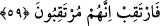

artmasına sebep olmaktadır. Nitekim Allah Teâlâ bu husûsa işâretle şöyle
buyurmaktadır: “Biz onlara süre veriyoruz ki günahı artırsınlar” (Âl-i İmrân, 3/178)
Şeyh Sâdî şöyle demiştir:
Lokman ne güzel söylemiş:
Hiç yaşamamak daha iyidir; hatâda yaşamaktan
Nasıl daha iyiyse dükkânın kapısını sabahtan kapamak
Kârı ve sermâyeyi elden çıkarmaktan.
58. Biz onu (Kur’ân’ı) senin diline kolaylaştırdık ki, düşünüp öğüt alsınlar.
“Biz onu (Kur’ân’ı) senin diline kolaylaştırdık ki,” bu, sûrenin fezlekesi ve
neticesidir. Lisan aslında konuşma âletidir. Burada mecâzen lügat mânâsında
kullanılmıştır. Peygamberimiz’in (s.a.) şu sözünde de böyledir: “Cennet ehlinin lisanı
Arapçadır.” Dolayısıyla âyetin mânâsı şöyle olur: Biz Kur’ân’ı senin lügatinle
indirmekle kolaylaştırmış olduk.
“Düşünüp öğüt alsınlar” kavmin onu anlasın, üzerinde düşünsün ve gereğiyle amel
etsinler. Şâyet bunu yapmazlarsa ne olur?!..
59. Biraz bekle, onlar da beklemektedirler (yakında başlarına neler geleceğini
göreceklerdir).
“Biraz bekle…” Bekle kudretlerinden ayrı düşecekleri zamanı, zîra bunları görmekte
âriflere ibret, muttakîlere öğüt vardır. “onlar da beklemektedirler” Onlar da senin
zayıf düşeceğin zamanı bekliyorlar. Ancak bu sana zarar vermez. Pek yakında senin
emelin gerçekleşecek, onların emeli ise boşa çıkacaktır. Yani Allah’tan sana ilâhî
yardım, onlara sonsuz bir azâb; dostlarına her dem yeni bir fetih, düşmanlarına târifi
imkânsız bir sıkıntı gelecek. Kendisine tâbî olanlara “varılacak en güzel yer” verilecek;
inkârcılara ise “azâbı tadın” denilecek.
‘Aynü’l- me‘ânî’de şöyle denilmektedir: Ey Muhammed (s.a.) sen sevâbı bekle. Zîra
onlar da azâbı beklemektedirler. Çünkü kötülük yapan kötülüğünün âkıbetini
bekleyecektir. Burada her iki takdire göre de irtikâb fiilinin mef’ûlü iki yerde de
hazfedilmiştir.
Âyetten çıkan bir takım sonuçlar vardır. Bunlardan bazıları şunlardır:
1- Allah Teâlâ Kur’ân’ı kolaylaştırdığını ifâde etmektedir. Kolaylaştırmak